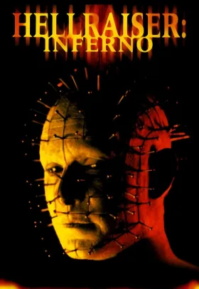
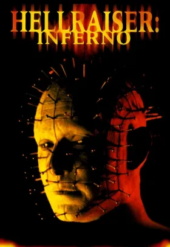
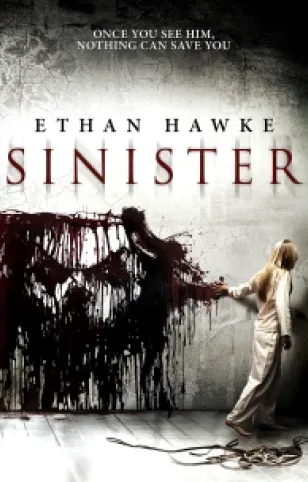
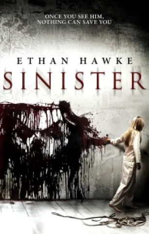

DR STRANGE: LE PARADOXE DE LA BOUCLE TEMPORELLE
Un fantastique film
Dr Strange est un film fantastique et d’action du réalisateur et scénariste Scott Derrickson sorti en 2016 chez Walt disney motion pictures.
fait partie du Marvel Cinematic Universe, l’adaptation cinématographique des comics Marvel créé dans les années 1930. Ce film est le premier des 3 opus a ce jour qui reprend les comics Dr Strange de Stan Lee et Steve Ditko.
y trouve en tête d’affiche Benedict Cumberbatch dans le rôle du docteur Stephen Strange, Mads Mikkelsen dans celui de l’antagoniste Kaecilius, Tilda Swinton dans celui de l’ancien ainsi qu’un caméo de Stan Lee, présent dans chaque film Marvel.

L’histoire d’un voyage initiatique.
Dans ce film, on suit l’histoire du Docteur Stephen Strange, un homme brillant mais prétentieux qui excelle dans la neurochirurgie jusqu’au jour où il est victime d’ un grave accident qui lui empêchera d’exercer son métier.
Après le témoignage d’un ancien paraplegique, Strange décide de tout abandonner pour partir à la recherche de Kamar-Taj en plein cœur du Tibet.
fera alors la découverte de l’Ancien, qui dirige un ordre de sorciers, la-bas il découvrira une forme de magie liée à la métaphysique et à des univers alternatifs.
devra donc apprendre à mettre son orgueil de côté pour manier ce pouvoir et sauver le monde d’une entité immortel du nom de Dormammu.
Le paradoxe de la boucle temporelle
Dans ce film, on suit l’histoire du Docteur Stephen Strange, un homme brillant mais prétentieux qui excelle dans la neurochirurgie jusqu’au jour où il est victime d’ un grave accident qui lui empêchera d’exercer son métier.
Après le témoignage d’un ancien paraplegique, Strange décide de tout abandonner pour partir à la recherche de Kamar-Taj en plein cœur du Tibet.
Il fera alors la découverte de l’Ancien, qui dirige un ordre de sorciers, la-bas il découvrira une forme de magie liée à la métaphysique et à des univers alternatifs.
Il devra donc apprendre à mettre son orgueil de côté pour manier ce pouvoir et sauver le monde d’une entité immortel du nom de Dormammu.
Le paradoxe de la boucle temporelle
L’un des thèmes les plus importants dans Dr Strange est le temps: il faut du temps à Stephen pour accepter sa condition, il lui en faut aussi pour trouver Kamar- Taj, de même pour apprendre à utiliser la magie.
Mais la facette du temps qui va nous intéresser ici est celle de la boucle temporelle.
boucle temporelle est une forme de voyage dans le temps, dans une fiction, un personnage va pouvoir remonter le temps de quelques secondes comme dans Dr Strange ou de plusieurs années comme dans Retour vers le Futur. Le protagoniste va donc pouvoir influencer le cours de l’histoire à sa guise. Cela peut créer parfois un paradoxe: un événement qui devait se passer a été empêché, il provoque une altération de l’histoire.
“Je peux perdre encore et encore, ce qui fait de toi mon prisoniers”
Au climax du film c’est ce pouvoir que Dr Strange utilise: Il s’enferme lui et Dormammu dans une boucle temporelle où il tente de négocier la sécurité de la Terre pour ensuite se faire tuer par son ennemie a chaque fois. Son pouvoir lui permet de revenir à la vie et recommencer là où il a échoué, lui influence alors le cours des choses.
Ainsi on voit que la boucle temporelle empêche la peur de l'échec, crainte bien connue de nos générations mais elle pourrait aussi être la clé d’un de nos plus grands espoirs: avoir un monde à notre image.

Scott Derrickson, un homme a connaitre
Scott Derrickson est un réalisateur et scénariste américain depuis les années 2000. Il est principalement connu pour avoir écrit et réalisé L'Exorcisme d' Emily Rose en 2005 mais aussi plus récemment pour Dr Strange et Dr Strange Multiverse of Madness en 2016 et 2022.
Nous allons alors retracer sa filmographie.
 1995: "Love In the Ruins"
1995: "Love In the Ruins"
 2000: "Urban Legends 2 Final Cut"
2000: "Hellraiser Inferno"
2000: "Urban Legends 2 Final Cut"
2000: "Hellraiser Inferno"
 2004: Land Of plenty"
2004: Land Of plenty"
 2005 "The Exorcisme
2005 "The Exorcisme
 2008 "The Earth Stood Still"
2012"Sinister"
2008 "The Earth Stood Still"
2012"Sinister"
 2013"Devil Knot"
2013"Devil Knot"
 2014 "Deliver Us From Evil"
2014 "Deliver Us From Evil"
 2000 "Sinister 2"
2000 "Sinister 2"
 2016Dr Strange
2021 "Black Phone"
2016Dr Strange
2021 "Black Phone"
 2022 "Dr Strange Multiverse of Madness"
2022 "Dr Strange Multiverse of Madness"